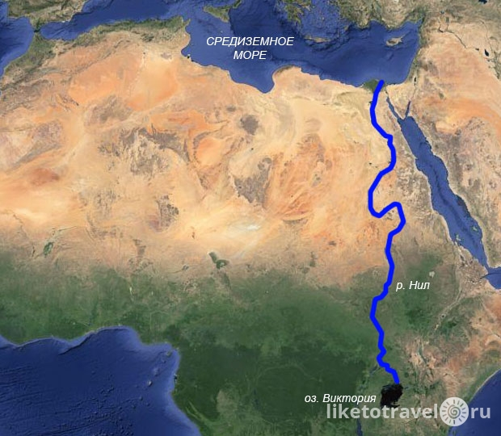

Нил
Нил — река в Африке, одна из величайших по протяжённости речных систем в мире. Слово «Нил» происходит от греческого названия реки «Нейлос» (Νεῖλος).
Река берёт начало на Восточно-Африканском плоскогорье и впадает в Средиземное море, образуя дельту площадью 24 тыс. км². Среднегодовой расход воды в устье Нила 2900 м³/сек. В верхнем течении принимает крупные притоки — Эль-Газаль (левый) и Асуа, Собат, Голубой Нил и Атбара (правые). Ниже устья правого притока Атбары Нил течёт по полупустыне, не имея притоков на протяжении последних 3000 км.
Водная система Нила считается самой длинной на Земле. Однако, по мнению бразильских исследователей, самая длинная речная система у Амазонки — по этим данным, её длина составляет 6992 километра, в то время как длина системы Нила — 6852 километра. Площадь бассейна реки Нил составляет 3349 тыс. км². Исток находится в Руанде, это река Рукарара, впадающая в реку Кагера. Сток воды сильно и резко изменяется в течение года. Суммарная длина судоходных участков составляет 3,2 тыс. км. Воды реки используются для орошения и производства электроэнергии. В дельте и долине Нила проживает почти все население и базируется почти вся экономика Египта. Крупнейшими городами являются Каир, Хартум, Асуан, Александрия.
Общие характеристики
Длину Нила часто отсчитывают от озера Виктория, хотя в него и впадают довольно крупные реки. Высота истока — 1134 м над уровнем моря.[источник не указан 1063 дня] Самой удалённой точкой можно считать исток реки Рукарара — одной из составляющих реки Кагера, которая берёт начало с высоты более 2000 м на одном из горных массивов Восточной Африки к югу от экватора и впадает в озеро Виктория. Длина Нила от озера Виктория до Средиземного моря — примерно 5600 км.
Площадь бассейна, по разным данным, — 2,8—3,4 млн км² (полностью или частично охватывает территории Руанды, Кении, Танзании, Уганды, Эфиопии, Эритреи, Южного Судана, Судана и Египта).
Средний расход у Асуана составляет 2600 м³/сек, но в разные годы возможны колебания от 500 м³/сек до 15 000 м³/сек.
Название
Название Нил происходит от греческого Νεῖλος и латинского Nilus. Первоначальное название может происходить от семитского корня nahal, имеющего значение «долина», или «речная долина», или в широком понимании — «река» или из языка ливийских племён, в котором значение «вода» имело слово «lil», которое в дальнейшем преобразовалось в форму «nil». На разных участках своего течения Нил имеет разные названия. Началом реки считается Кагера, основным истоком которой является Рукарара, впадающая в Мвого, которая в свою очередь впадает в Ньяворонго, а она, при слиянии с Рувуву, наконец образует Кагеру, впадающую в озеро Виктория. Происхождение названий этих рек не установлено. Следующий участок до озера Альберт называется Виктория-Нил, далее до притока Асуа — Альберт-Нил, после — Бахр-эль-Джебель (с араб. горная река). Только после впадения в неё левого притока Эль-Газаль река получает название Белый Нил (с араб. Бахр-эль-Абьяд — белая река). Основное название, Нил, река имеет ниже слияния с крупнейшим притоком Голубой Нил. Три притока Белого Нила имеют названия, связанные с цветом: Собат (с араб. Бахр-эль-Асфар — жёлтая река), Голубой Нил (с араб. Бахр-эль-Азрак — голубая река), Атбара (араб. Бахр-эль-Асвад — чёрная река) — правый приток ниже Хартума. По всей видимости названия в цветах не случайны и имеют нераскрытое символическое значение.
Несколько интересных фактов о Ниле
Источники:
Википедия